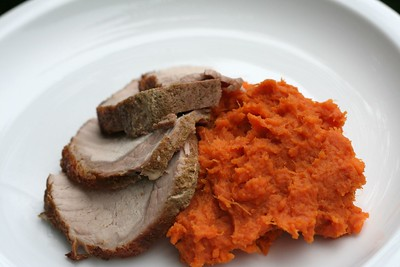

HOME
Sweet Potato paired with Pork chops

Description
A delicious plate of mashed sweet potato paired with pork chops
Picture attributable to: "pork with cumin & spicy sweet potato mash"
by 46137 is licensed under CC BY 2.0.
Ingredients
- Pork chops
- Sweet Potatoes
- Olive Oil
- Coconut milk
Steps
- Preheat oven to 375 ℉
- Season pork chops and drizzle with olive oil
- Bake for 20-25 minutes
- Boil/Bake sweet potato
- Mash sweet potato with coconut oil and salt to taste